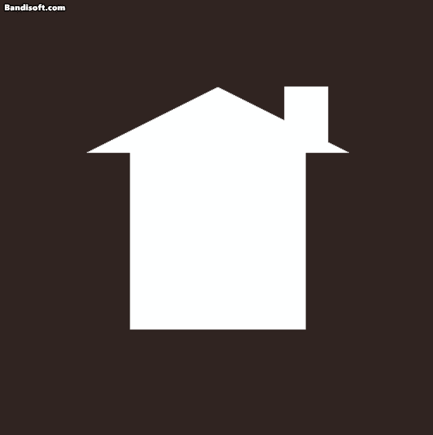

Gif of My Game
Graphics.cpp platform-independent
My method of making Graphics platform independent is to derive a View class from Graphics. This class would handle clearing previous images, initializing view, swapping images to the front buffer and cleaning up relevant data.
Clear the back buffer color
As mentioned above, Graphics file cleans the back buffer color by using the function provided by view class.
|
|
By passing simulation time to ClearPreviousImage function and doing the similar work as the fragment shader to make the background color animate.
|
|
And the result has been shown on “Gif of My Game”.
Effect
Initialize
By passing vertex shader path and fragment shader path to initialize an effect
|
|
Memory Analysis
|
|
By debugging, it is interesting to find the size of string type is different between x86 and x64. The reason for it is that the size of pointer is different in two platforms. Normally, the size of pointer in x86 platform is 4 bytes while it is 8 bytes in x64 platform. And for that, the memory alignment is also different. As a result, the size of string in x86 platform is 28 bytes and in x64 platform is 40 bytes.
Considering two string variables are needed, a single effect would take up 56 bytes in x86 platform and 80 bytes in x64 platform.
Why it couldn’t be smaller?
Because two strings pointing to vertex shader path and fragment shader path respectively are necessary.
Mesh
Initialize
By passing vertex data, index data and the size of them to initialize a mesh
|
|
Memory Analysis
|
|
Because the vertex data and index data are passed as pointers, and as mentioned in effect memory analysis, the size of pointer is different in the two platforms. So two pointers and two unsigned int type variables would take up 16 bytes in x86 platform and 24 bytes in x64 platform.
Why it couldn’t be smaller?
To initialize geometry, you must let it know the size of data, so you have to pass the count info. And considering the performance, using pointers point the address of vertex data and index data.
Game Sample
Download and have a try: MyGame